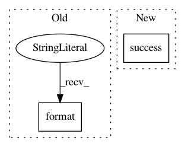

a3cb9c08f86c193f76336284580ff302981388d7,build-support/bin/check_pants_pex_abi.py,,main,#,21
Before Change
if parse_abi_from_filename(filename) != "none"
}
if len(parsed_abis) < 1:
die("No abi tag found. Expected: {}.".format(expected_abi))
elif len(parsed_abis) > 1:
die("Multiple abi tags found. Expected: {}, found: {}.".format(expected_abi, parsed_abis))
found_abi = list(parsed_abis)[0]
After Change
if not parsed_abis.issubset(expected_abis):
die("pants.pex was built with the incorrect ABI. Expected wheels with: {}, found: {}."
.format(" or ".join(sorted(expected_abis)), ", ".join(sorted(parsed_abis))))
success("Success. The pants.pex was built with wheels carrying the expected ABIs: {}."
.format(", ".join(sorted(parsed_abis))))
def create_parser():
parser = argparse.ArgumentParser(
In pattern: SUPERPATTERN
Frequency: 4
Non-data size: 2
Instances
Project Name: pantsbuild/pants
Commit Name: a3cb9c08f86c193f76336284580ff302981388d7
Time: 2019-04-13
Author: john.sirois@gmail.com
File Name: build-support/bin/check_pants_pex_abi.py
Class Name:
Method Name: main
Project Name: rusty1s/pytorch_geometric
Commit Name: ed8a78020e49f924a9389bb0d85f6a6d4de85cc8
Time: 2017-11-26
Author: matthias.fey@tu-dortmund.de
File Name: torch_geometric/datasets/utils/progress.py
Class Name: Progress
Method Name: success
Project Name: pytorch/pytorch
Commit Name: 88baf470d10819892898746c7a7f1f4ddf3ffcbc
Time: 2021-01-27
Author: meghanl@fb.com
File Name: torch/jit/_recursive.py
Class Name:
Method Name: infer_concrete_type_builder
Project Name: ray-project/ray
Commit Name: 908c0c630a6c7c6e35b7bb0e172d41372bfb309d
Time: 2020-07-22
Author: maximsmol@gmail.com
File Name: python/ray/autoscaler/updater.py
Class Name: NodeUpdater
Method Name: wait_ready